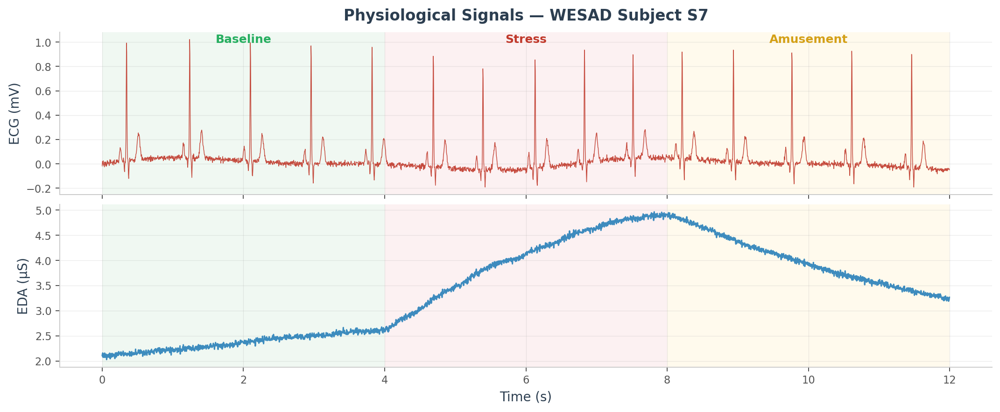

Artificial Intelligence · Human-Centred Data · Digital Health
I develop machine-learning and data-driven systems for understanding complex human-centred data. My work
connects applied AI, behavioural science, and digital health, with a focus on building models that are
accurate, interpretable, and useful beyond controlled research settings.
Computer Engineer and behavioural researcher with
CNRS and
Erasmus Mundus
training in multimodal sensing, longitudinal human behaviour data and predictive modelling.
This background gives me a cross-disciplinary foundation in AI, statistical modelling, signal processing,
behavioural research, and human-centred technology.
Selected Projects

CalmSense — Explainable multimodal stress detection from wearable physiology
Wearable sensors can reveal a lot about stress — if the model is built right and actually explainable. I trained a cross-modal Transformer to learn joint representations across ECG, EDA, skin temperature and accelerometer streams on the WESAD benchmark, benchmarked against 1D-CNN, BiLSTM and Optuna-tuned gradient-boosting baselines over 60+ biomarkers. SHAP and LIME attributions make every prediction readable to a clinician, not just a model — and the system runs as a FastAPI real-time inference service.
PulseShift — Climate-aware decision support for outdoor activity planning
Weather apps tell you conditions — they don't tell you what to do. PulseShift ingests NOAA hourly forecasts and EPA AirNow air quality data, scores how likely a session needs to be disrupted, and ranks specific adaptations: start earlier, shift the route, reduce intensity, move indoors. The retained-activity-minutes (RAM) metric gives a concrete, auditable measure of how much of the session was preserved — and the decision logic is fully inspectable, not a black box.
NovaVision — Emotion-to-image generation via NLP and diffusion models
Language carries emotion — and emotion can be visual. NovaVision detects emotional content from text in real time using a fine-tuned DistilRoBERTa model across 7 emotion classes with valence and arousal scores, then routes output through a smart prompt-engineering layer before generating 1024×1024 artwork with FLUX.1 diffusion models. The system distinguishes emotional inputs from descriptive ones and adapts generation accordingly — served through a Flask REST API with full download, seed control and generation history.
NexusRAG — Self-correcting retrieval-augmented generation for scientific literature
LLMs hallucinate — especially on scientific content where precision matters. NexusRAG builds a hybrid retrieval pipeline over uploaded research papers (PDF, DOCX, MD) using LanceDB vector embeddings alongside a BM25 keyword index, then passes retrieved passages to a local Ollama LLM. A verification loop checks each citation against the source: if a claim doesn't hold, the system reformulates, re-retrieves and tries again. Everything runs locally — no API keys, no data leaving the machine — with exact passage and page-number citations in every answer.
Multimodal-Multisensor — Longitudinal trait-vs-state analysis of physiological response
A core question in digital health: when someone's physiology shifts during a task, is that about them as a person or just about that moment? I ran a longitudinal study synchronizing eye-tracking, HRV, EDA and facial action units across three weekly sessions, then used PCA with K-Means clustering and cross-session correlation analysis to decompose variance. The result: physiological patterns are far more stable within a person than across people — which has real consequences for how personalized health models should be built.